Misasa, Tottori: things to do, food and stays
Misasa · Tottori
Misasa
Highlighted on the Tottori map.
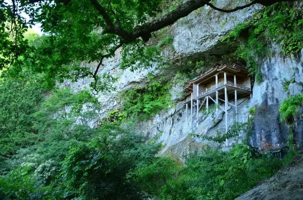
Stay
橋津屋 別邸 月代
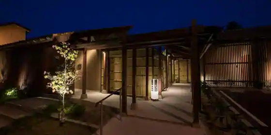
Hashi Tsuya Bettei Sakayaki
Inn at Misasa Onsen in Misasa with open-air baths.
依山楼 岩崎
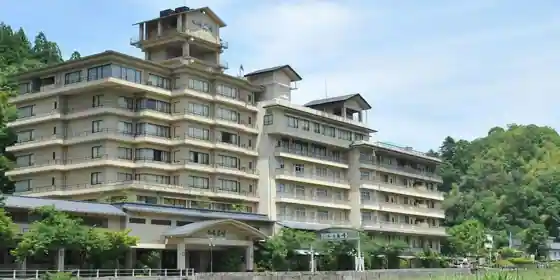
I Yama Ro Iwasaki
Inn at Misasa Onsen in Misasa.
登録有形文化財の宿 木屋旅館
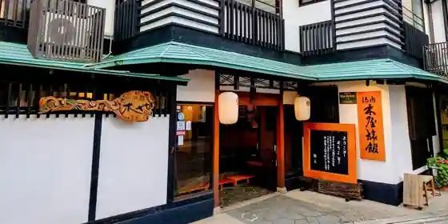
Toroku Yukei Bunkazai No Yado Kiya Ryokan
三朝薬師の湯 万翆楼
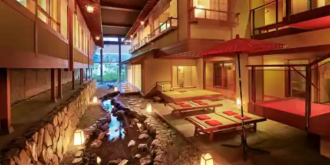
Misasa Kusurishi No Yu Man Sui Ro
Inn in Yamada, Misasa with breakfast available.
旅館 大橋
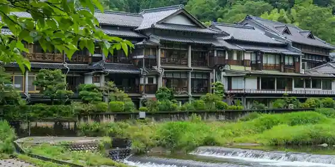
Ryokan Ohashi
三朝温泉 三朝館
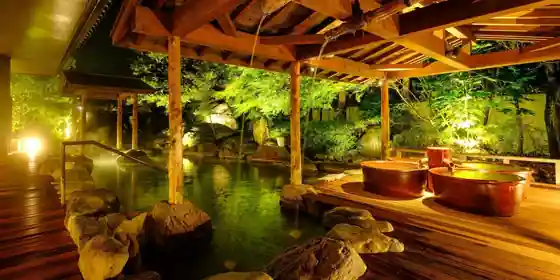
Misasa Onsen Misasa Kan
Inn at Misasa Onsen in Yamada, Misasa.
三朝温泉 隠れ和宿 いわゆ
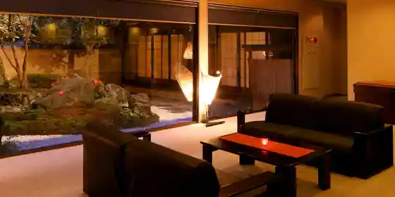
Misasa Onsen Kakure Wa Yado Iwayu
Inn at Misasa Onsen in Misasa.
三朝ロイヤルホテル（HMIホテルグループ）
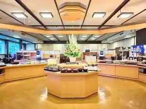
Misasa Roiyaru Hotel (HMI Hotel Gurupu)
Hotel in Ose, Misasa with buffet meals.
三朝温泉 ようこそ旅館
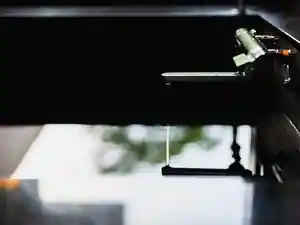
Misasa Onsen Yokoso Ryokan
Ryokan inn at Misasa Onsen in Yamada, Misasa.
三朝温泉 渓泉閣
Misasa Onsen Kei Izumi Kaku
Inn at Misasa Onsen in Yamada, Misasa with riverside setting.
三朝温泉 ちくま旅館
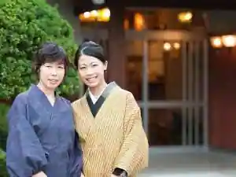
Misasa Onsen Chikuma Ryokan
Ryokan inn at Misasa Onsen in Yamada, Misasa.
自然治癒力を高める湯治の宿 三朝温泉 桃園館
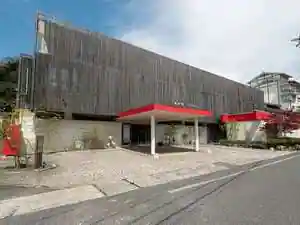
Shizenchiyu Chikara Wo Takame Ru Toji No Yado Misasa Onsen Momozono Kan
Inn at Misasa Onsen in Yamada, Misasa.
Dining
橋津屋
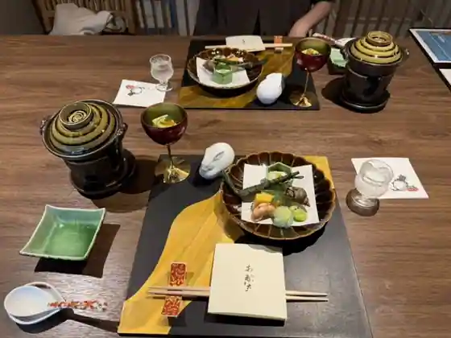
Hashi Tsuya
三朝ヨーグルト
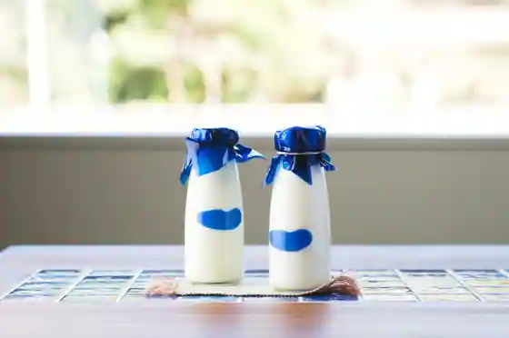
Misasa Yoguruto
寿製菓 三朝支店
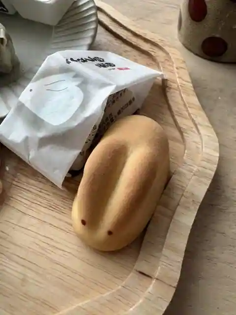
Hisashi Seika Misasa Shi
三朝館
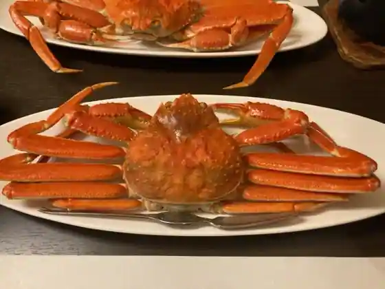
Misasa Kan
谷川天狗堂
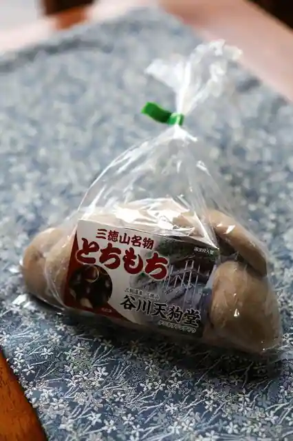
Tanigawa Tengu Do
万翆楼
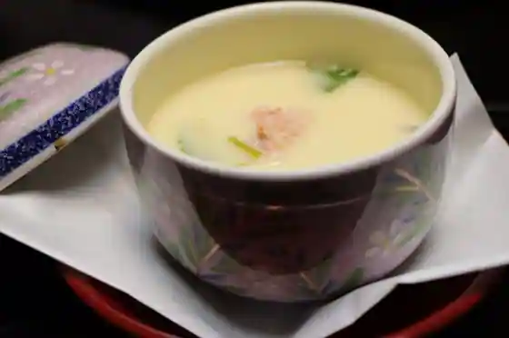
Man Sui Ro
三朝ロイヤルホテル
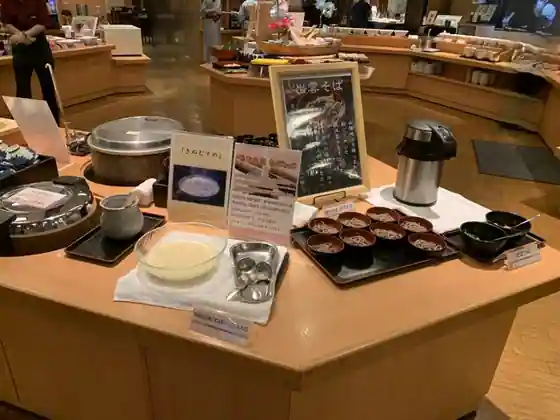
Misasa Roiyaru Hotel
斉木別館
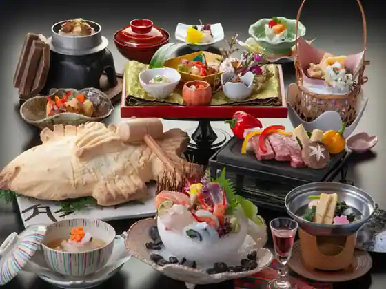
Saiki Bekkan
清流荘
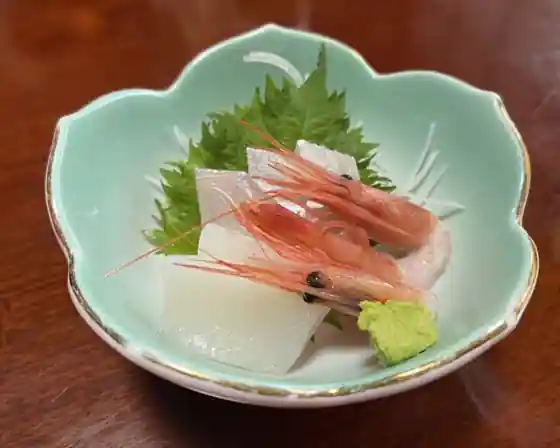
Seiryu So
みささの味処 縁がわ
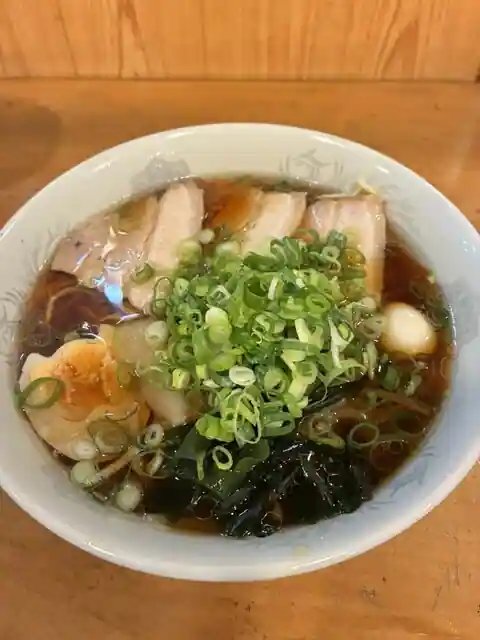
Misasano Ajidokoro Heri Gawa
松之屋
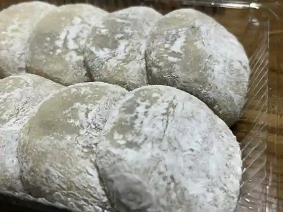
Shoshi Ya
木屋旅館
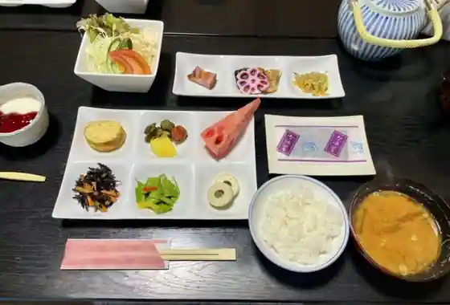
Kiya Ryokan
後楽
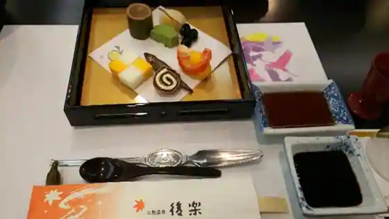
Koraku
渓泉閣
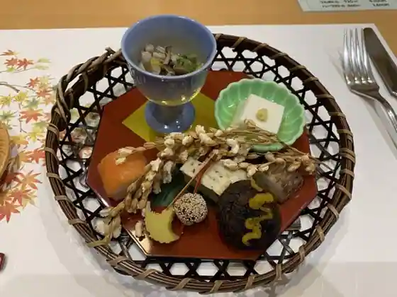
Kei Izumi Kaku
旬彩の宿 いわゆ
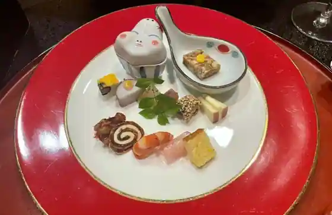
Jun Sai No Yado Iwayu
en misasa
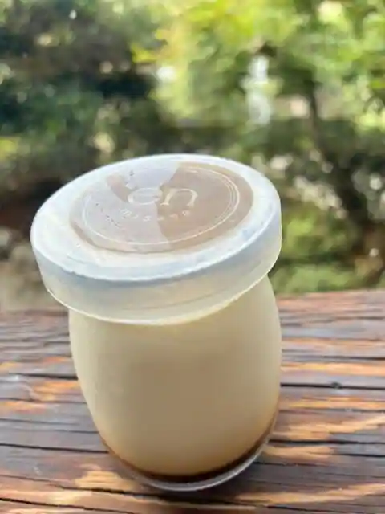
en misasa
みささガーデンホテル
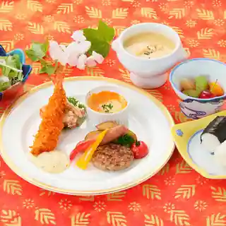
Misasa Garden Hotel
三朝荘
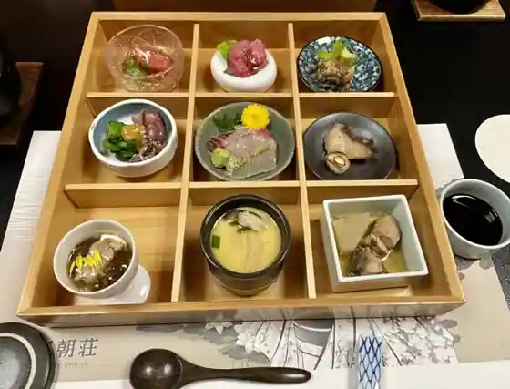
Misasa So
有楽
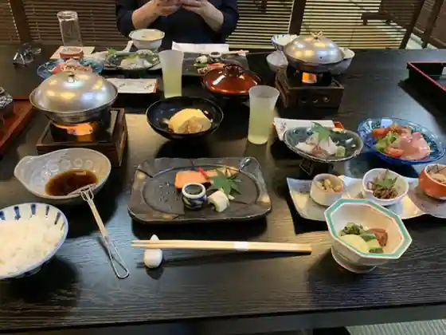
Yuraku
茶田屋
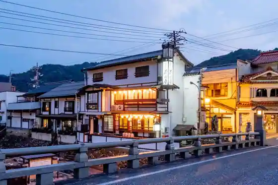
Cha Taya
お食事処かじか亭
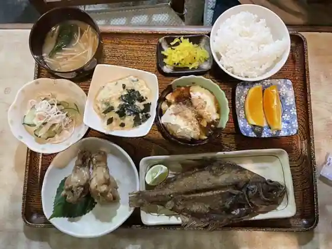
O Shokuji Tokoro Kajika Tei
Sights
Santoku Sanza Butsuji Tonyu Do
Misasa Onsen
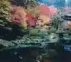
Roadside Station Misasa Raku City Rakuza
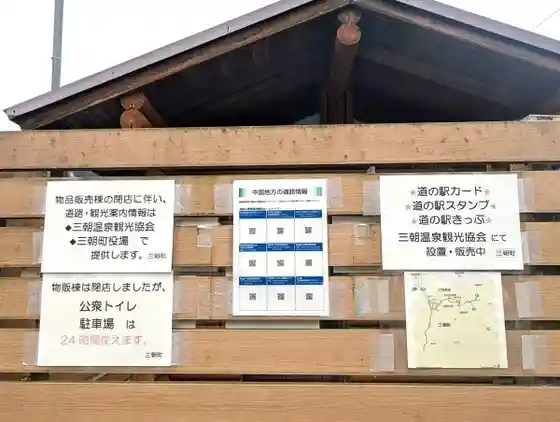
Koi Tani Hashi (Enmusubi Kajika Kaeru)
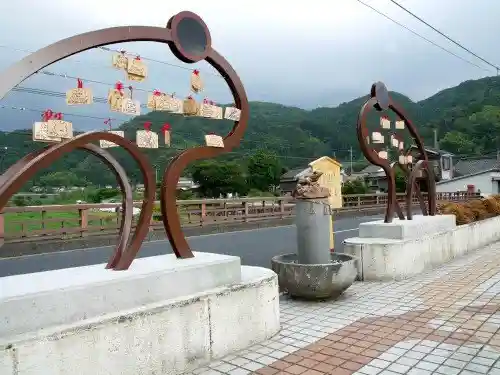
Kojika Kei
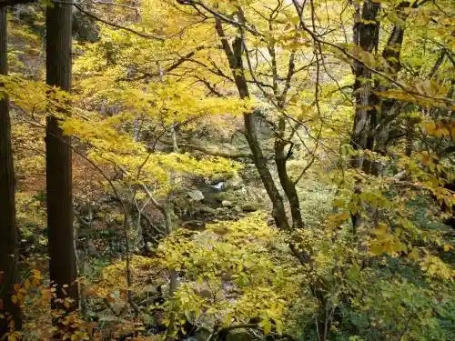
Misasa Shrine
Santoku Yama
Kabu Yu
Misasa Hashi Kajika Hashi Koi Tani Hashi
Togei Experience
Misasa Onsen Kawara Furo
Misasa Onsen Yanase Park
Kyurii Zo
Misasa Onsen no Ashiyu
Misasa Baiorin Art Museum
Kajikawa Rihatsuten
Misasa Masamune
Misasa Town Hall